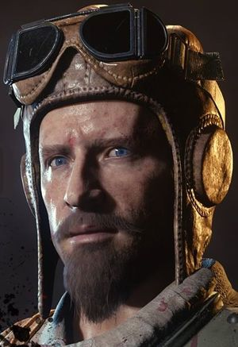
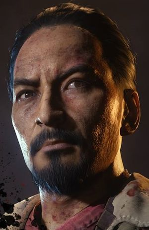

CHARACTERS
"Tank" Dempsey

Corporal "Tank" Dempsey is an American Marine who fought in the United States Marine Corps, and is a playable main character in the Zombies game mode. His player indicator color in World at War and Black Ops is white (shared with John F. Kennedy and Sarah Michelle Gellar), but is randomized in his appearances since and including Moon. An alternate version of Dempsey is introduced in Origins, and reappears in Call of Duty: Black Ops III as a main, playable character in The Giant, Der Eisendrache (which features the Original Timeline "Tank" Dempsey), Zetsubou No Shima, Gorod Krovi, and Revelations.
Nikolai Belinski
Sergeant Nikolai Belinski (Russian: Николай Белинский) is a Russian soldier who fought in the Red Army, and is a playable main character in Zombies. His player indicator color is blue (shared with Robert McNamara and Robert Englund) but is randomized in Moon and all subsequent maps. An alternate version of Nikolai appears in Origins, and reappears in Call of Duty: Black Ops III, in The Giant, Der Eisendrache, Zetsubou No Shima, Gorod Krovi (which also includes the original timeline Nikolai Belinski) and Revelations.
Takeo Masaki
Captain Takeo Masaki (Japanese: 正木 武雄 Masaki Takeo) is a Japanese soldier who fought in the Imperial Japanese Army, and is a playable main character in Zombies. His player indicator color is yellow (shared with Richard Nixon and Danny Trejo), but is randomized in Moon and all subsequent maps. An alternate version of Takeo appears in Origins, and reappears in Call of Duty: Black Ops III, in The Giant, Der Eisendrache, Zetsubou No Shima (which also features the Original Timeline Takeo Masaki), Gorod Krovi and Revelations.
Edward Richtofen

Doctor Edward Richtofen is a German scientist in the Zombies storyline and also a playable character in the Zombies game mode. His player indicator color in World at War and Black Ops is normally green (shared with Fidel Castro and Michael Rooker), but is randomized in Moon and in all subsequent maps. Richtofen's voice appears in Call of Duty: Black Ops II in all maps set in the future, whilst an alternate version of him appears in Origins. This Richtofen also appears in Call of Duty: Black Ops III, in the ending cutscene of Shadows of Evil, and as a playable character in The Giant (which also features the Original timeline Richtofen during the opening cutscene), Der Eisendrache, Zetsubou No Shima, Gorod Krovi, and Revelations.